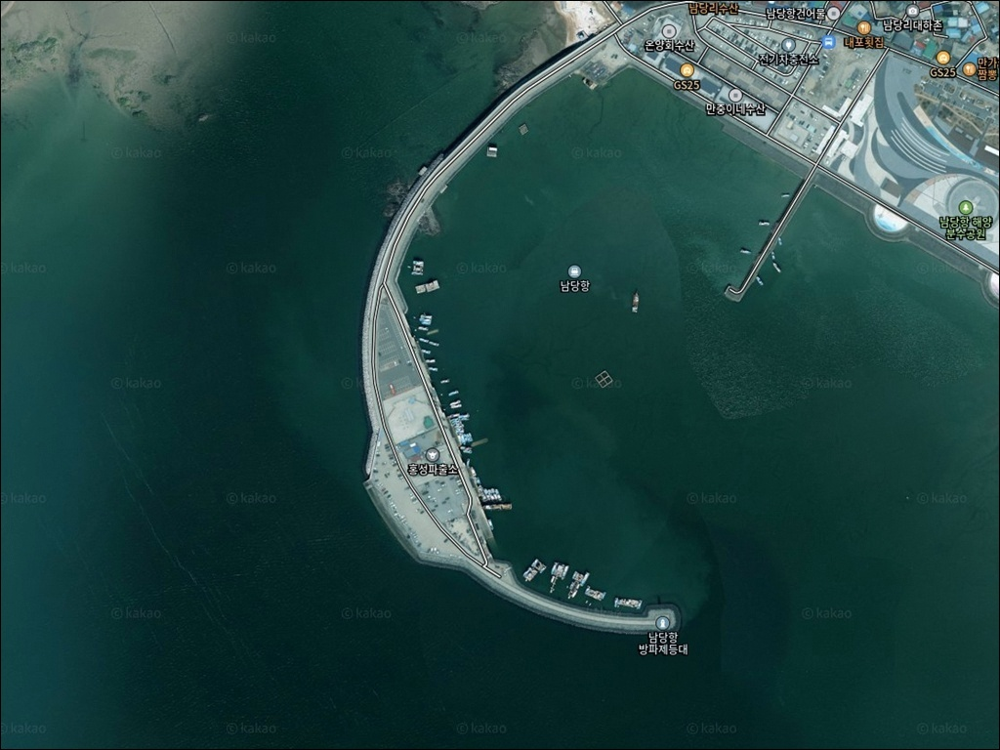
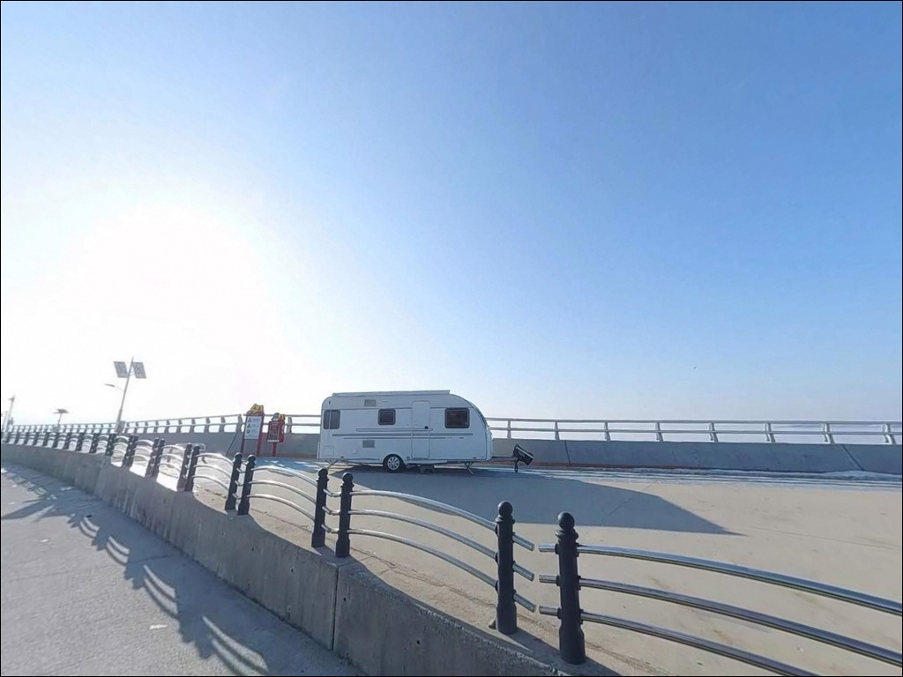
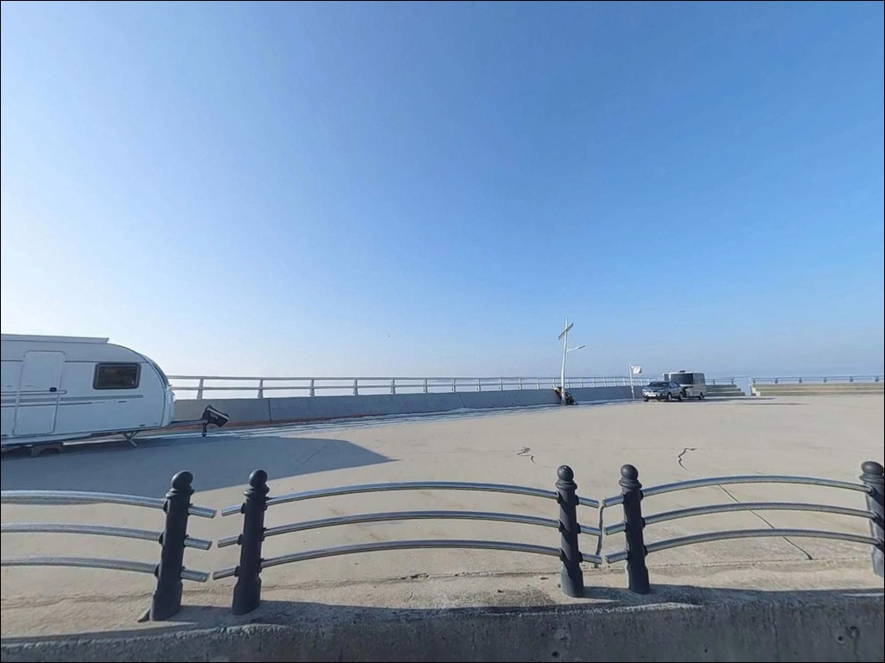
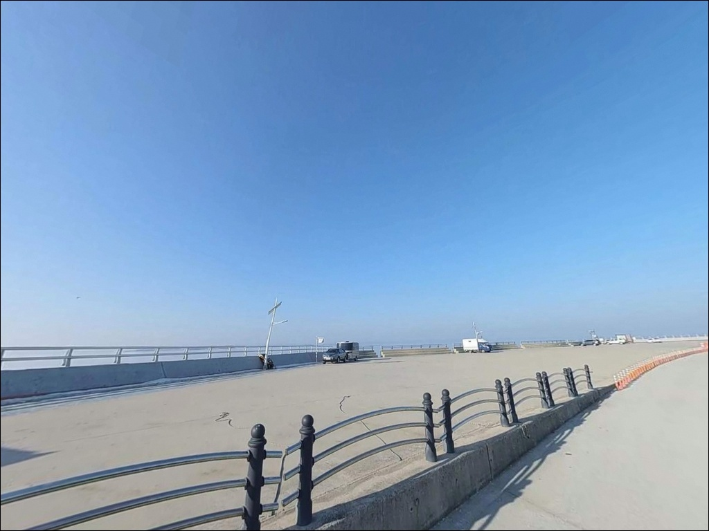
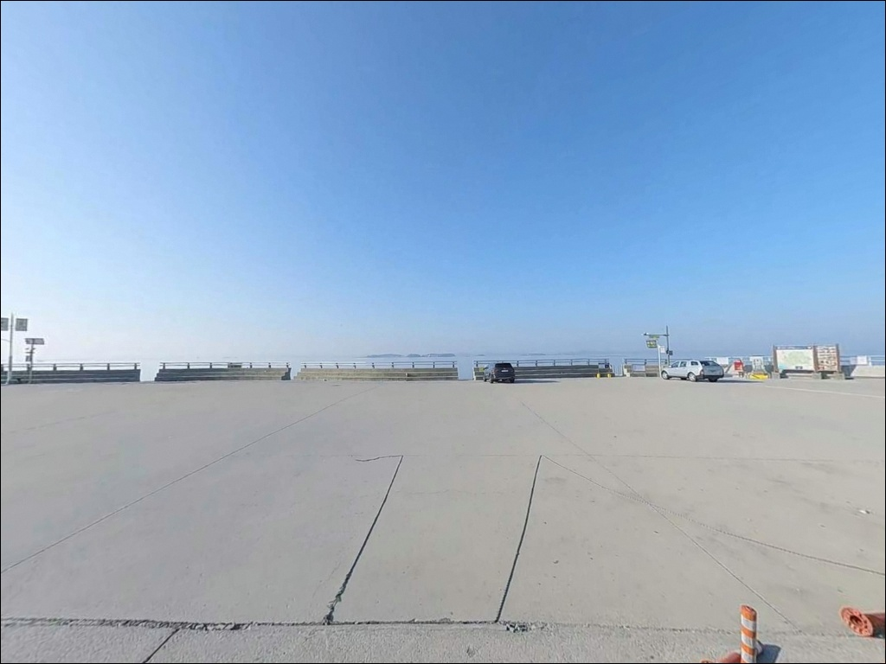
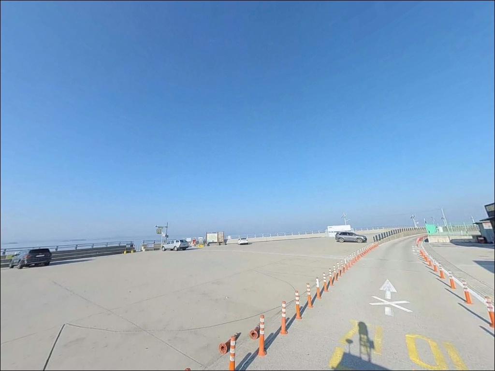
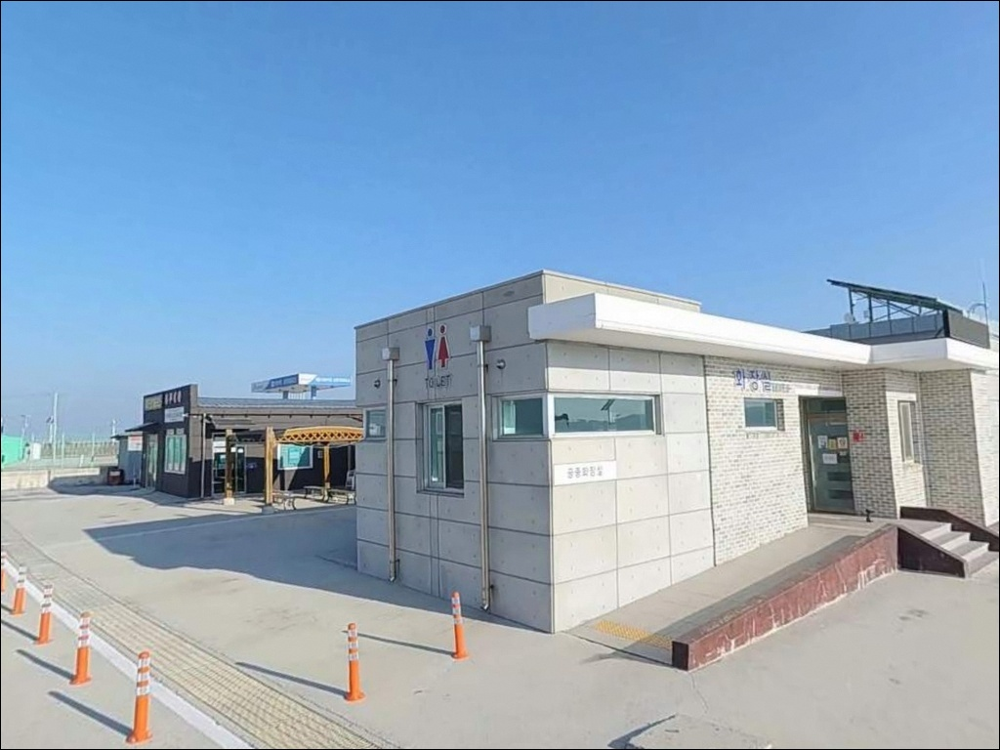
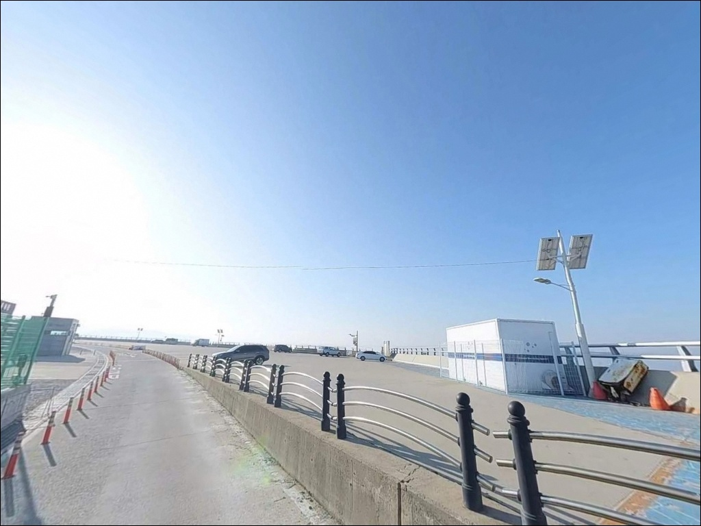
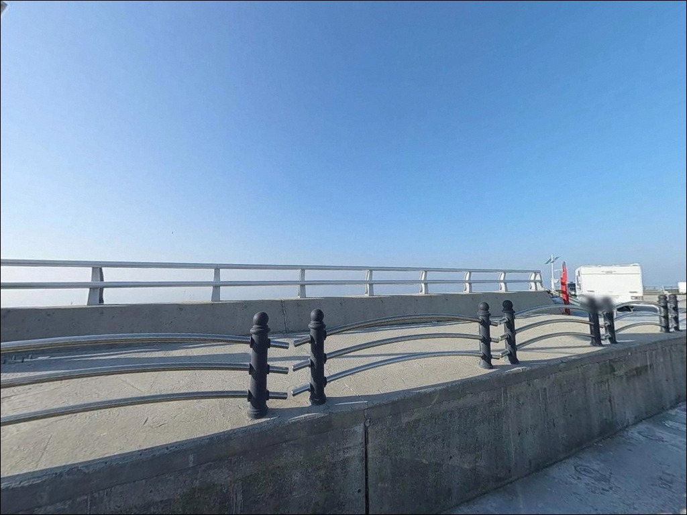

남당항, 충남 홍성군 바다 풍경 좋은 차박, 낚시 명소
이 페이지에는 광고(제휴 링크 포함)가 있으며, 광고 링크를 통해 구매하면 운영자가 판매 수익 또는 수수료를 받을 수 있습니다. 포인트 사진: 카카오맵 스카이뷰·로드뷰. 이 페이지의 지도·사진 이미지는 카카오맵의 실제 서비스 이미지와 다를 수 있습니다.


포인트 안내
남당항
충남 홍성군 서부면 남당리 863
천수만의 조석간만 차는
서해에서도 큰 편에 속합니다.
간조 전후에는 석축 하단이 바닥을 드러내고
조류도 멈춰,
에깅이든 원투든
채비가 제 기능을 못하는 구간이 생깁니다.
물때 계산이 남당항 방문 성패의 첫 번째 기준입니다.
이 글은 남당항의 진입 환경과 주차 조건,
차박 여건, 편의시설,
낚시 방식별 공략 조건에 집중합니다.
조황 단정과 특정 어종 보장은
이 글의 범위에 포함되지 않습니다.

1. 진입 동선과 주차 여건
남당항은 서해안고속도로 홍성 IC에서
서부면 방향 40번 지방도를 타고
약 20km 안팎을 이동하면 닿는 항구입니다.
지방도 구간이지만 도로 폭이 넉넉하고
포장 상태가 양호해
대형 SUV나 캠핑카도 진입에 무리가 없는 구조입니다.
항 내부 도로도 회차가 수월한 수준으로
카라반 진입 사례도 확인됩니다.
항구 내에는 광활한 공영주차장이
24시간 무료로 운영됩니다.
남당리 859-2 일대에 위치하며
전기차 급속충전기도 설치되어 있습니다.
방파제 진입로 주변으로도
주차 가능한 공간이 넓게 분포해 있어
평일 기준 자리 확보는 크게 어렵지 않습니다.
단, 방파제 일부 구간에 공사가 진행 중인 경우
출입 통제 구역이 설정됩니다.
방파제 진입 전 현장 표지판을 먼저 확인하고
통제 구간 안쪽으로는 진입하지 않는 것이 원칙입니다.
대하·새조개 축제 시즌(8~10월)에는
주말 기준 주차 혼잡이 심해지므로
이른 도착이 자리 확보의 기본 조건입니다.

2. 차박 환경과 야간 체류 여건
남당항은 주차장이 넓어
낚시 후 차를 세우고 하룻밤 머무는
이동형 체류가 가능한 포인트입니다.
주말 기준 캠핑카와 카라반이 자리를 잡는
모습을 볼 수 있는 곳이기도 합니다.
다만 관광지·상권 밀집 구조라
야간에도 상가 조명과 차량 통행이 이어집니다.
항 주변 횟집 상가와
해양분수공원 야간 조명이 영향을 주는 환경이라
완전한 정숙이나 암흑 야간 환경은
기대하기 어렵습니다.
천수만 서향 구조로 남서풍이 강하게 부는 날에는
외항 쪽이 바람 영향을 직접 받으므로
기상 예보 확인 후 차량 위치를 정하는 것이 좋습니다.
남당항 차박은
조용한 숙박형보다
낚시 후 간단히 쉬는 기지형으로 운용할 때
만족도가 높은 편입니다.
좀 더 한적한 환경을 원한다면
남당항 북쪽 어사포구 방면이나
서부면 내 소규모 포구를 따로 탐색하는 편이 현실적입니다.


3. 주변 편의시설 및 인프라 현황
남당항 일대는 천수만권에서
편의시설이 가장 잘 갖춰진 포인트 중 하나입니다.
CU 홍성남당점(24시간)과
이마트24 홍성남당항로점이 항 인근에 위치해
야간 출조 전 간식과 음료 보충이 수월합니다.
홍성서부농협하나로마트 남당점도
반경 내에 있어 대용량 식재료 구입도 가능합니다.
공중화장실은 항구 구역 내에
장애인 화장실 포함 2개소가 운영됩니다.
방파제 초입에는 낚시용품점이 있어
에깅에 필요한 에기와 소품을
현지에서 바로 구입할 수 있습니다.
채비가 부족할 때 현장 보충이 가능한 포인트는
천수만권 내에서 흔하지 않습니다.
주변 횟집과 수산물 판매장이 밀집해 있어
낚시 후 인근에서 식사 해결도 어렵지 않습니다.
축제 시즌 주말에는 식당 대기가 길어질 수 있으므로
출조 일정을 미리 감안하는 것이 좋습니다.

4. 방문 전 반드시 확인할 준비사항
남당항 방문에서 가장 먼저 챙겨야 할 것은
물때입니다.
천수만은 내만형 구조로
조석간만의 차가 크게 나타납니다.
바다타임에서 남당리 기준 물때를 확인하고
들물 초반~만조 전후 시간대를 노려
출발 시각을 잡는 것이 기본 전략입니다.
간조 전후에는 석축 하단이 드러나고
조류가 사라지면서 낚시 여건이 급격히 나빠집니다.
천수만 조석간만의 차를 계산하지 않고
남당항 방파제에 오르면,
석축 하단이 드러난 채 낚시 자리가 사라지는 경우가 발생합니다.
또 하나 챙겨야 할 변수는
간월호·부남호 민물 방류 일정입니다.
천수만 어장 전체에 영향을 주는 사안으로
방류 직후에는 수질이 탁해지며 조황이 떨어지는 경향이 있습니다.
출조 전 "천수만 방류" 키워드로
방류 예정 여부를 미리 검색해 두는 것이 좋습니다.
석축 구조 방파제는
물에 젖으면 미끄럽습니다.
미끄럼 방지 처리된 신발을 신고,
야간 낚시라면 헤드랜턴과 구명조끼는
선택이 아닌 기본 장비입니다.

5. 석축 방파제 구조로 읽는 낚시 여건
남당항 방파제는 테트라포트가 아닌
석축·계단식 구조가 중심입니다.
이동과 발판이 비교적 수월하고,
외항 쪽으로 길게 뻗은 방파제 구간에서
다양한 자리를 탐색할 수 있습니다.
방파제 꺾이는 지점은
조류 변화가 만들어지는 포인트 구간으로
자리 선정 시 우선 점검 대상입니다.
천수만 내만 특성상 조류는 강하게 흐르기보다
물때에 따라 흐름이 살았다 죽었다 하는 패턴입니다.
들물이 본격적으로 차오르는 타이밍에
외항 석축 구간의 낚시 여건이 좋아지는 편입니다.
수심은 내항 쪽이 완만하고,
외항 방파제 끝단 방향으로 갈수록 수심이 깊어지는
구조입니다.
방파제 외항 쪽 석축 경계선과 바닥은
주꾸미·갑오징어가 은신하기 좋은 지형 조건을 갖추고 있습니다.
가을 시즌 남당항 석축 구간은
충남 서해안에서 주꾸미 에깅 포인트로 손꼽히는 곳 중 하나입니다.
최신 조황은 출조 전 반드시 직접 검색해 확인하시기 바랍니다.


6. 남당항 지형에 맞는 낚시 스타일
이 포인트에서 가장 많이 활용되는 방식은
주꾸미·갑오징어 에깅입니다.
가을 시즌을 중심으로
석축 구간을 천천히 이동하며 탐색하는 워킹 스타일이
이 포인트 지형 조건과 잘 맞습니다.
원투낚시도 남당항 구조에 어울리는 스타일입니다.
외항 방향으로 던지면
도다리·붕장어·우럭 등 바닥 어종을 노릴 수 있으며,
들물 타이밍에 조류가 살면서 채비 안착이 좋아집니다.
찌낚시는 방파제 꺾이는 지점 주변에서
감성돔·숭어·학꽁치를 기대해 볼 수 있는 스타일입니다.
내항 쪽 잔잔한 수면은 찌 운용이 수월해
들물 타이밍에 집중하기 좋은 구간입니다.
남당항에서는 유어선도 활발하게 운항합니다.
광어 다운샷, 우럭, 주꾸미, 참돔 타이라바 등
다양한 선상낚시 프로그램이 운영되므로
방파제 여건이 여의치 않을 때
선상낚시를 대안으로 검토할 수 있습니다.

7. 대안 포인트와 플랜 B 동선
남당항 방파제 여건이 기대에 못 미칠 때
가장 먼저 검토할 대안은
항 북쪽 약 2km 거리의
어사리항입니다.
소규모 어촌 항구로 비교적 한적한 편이며,
남당항에 비해 방문객 밀집도가 낮아
조용한 낚시를 원할 때 유용한 선택지입니다.
천수만 안쪽의 궁리항도
참고할 만한 대안 포인트입니다.
조류 흐름이 완만한 내만 구조로
망둥어·우럭 낚시가 가능한 곳으로 알려져 있습니다.
남당항과 유사한 천수만 패턴의 포인트를
찾는다면 이 방향을 탐색해 볼 수 있습니다.
죽도는 선상을 통해 접근 가능한 대안입니다.
남당항 방파제 끝 죽도행 선착장에서 도선을 이용하면
주변 해역 낚시를 연계할 수 있어
방파제 낚시와 도서 포인트를 묶은 이동 코스로
활용도가 있습니다.

물때를 맞추면
남당항 방파제가 달리 보입니다
원투낚시나 에깅을 즐기는 낚시인에게
남당항은 천수만권에서
편의시설과 접근성을 동시에 갖춘
보기 드문 포인트입니다.
진입이 쉽고 주차가 넉넉하며,
채비가 부족하면 방파제 초입 낚시용품점에서
현장 보충까지 가능합니다.
다만 물때 계산 없이 오르면
석축 하단이 드러난 채 낚시 자리가 사라지는
상황을 맞닥뜨릴 수 있습니다.
대하·새조개 축제 시즌이라면
주차 혼잡도 각오해야 합니다.
물때 확인, 공사 구역 점검, 축제 시즌 감안,
이 세 가지를 출발 전에 챙기고 가면
남당항은 기대에 부응하는 포인트가 됩니다.
낚시 후 항구 인근 횟집에서
대하나 새조개로 마무리하는 하루 일정을 원하는 낚시인이라면,
남당항은 충남 서해안에서
그 그림이 가장 자연스럽게 완성되는 포인트입니다.